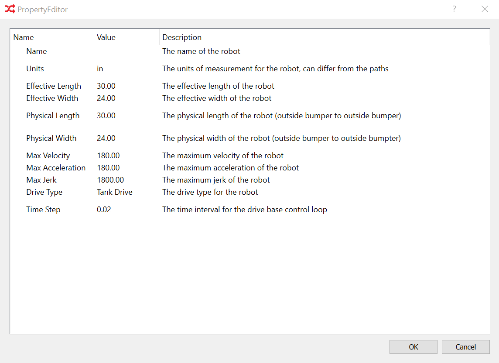

Defining A Robot

When the program is first started, no robot is defined. The
program will prompt you to create a robot. Creating a robot
consists of describing the physical attributes of the robot.
This includes the width, length, maximum velocity, maximum
acceleration, maximum jerk, drive type, and the timestep for
the robot control loop controlling the drive base. Note,
additional robots can be defined at any time via the Robots/New
Robot menu item. Robots may also be deleted via the Robots/Delete
Robot menu item.
While you can select the Swerve Drive type, all support for swerve is
experimental. It will likely not work at this point in time.
Next: Create A Path Group